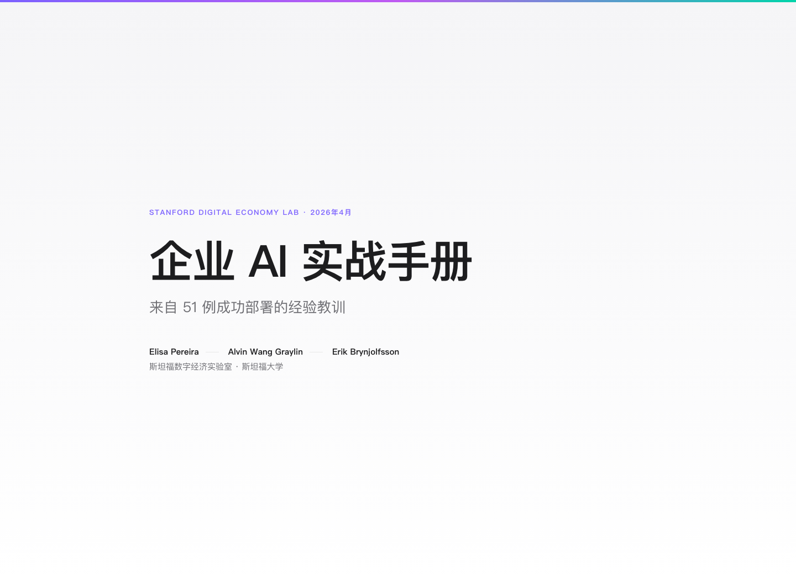

Hermes / Claude Skill
把长文档翻成能读完的网页。
PageTurner 提取 PDF / 网页全文，理解章节、数据、表格和引用，再生成中文 HTML 快速阅读版。适合研究报告、AI 论文、知识图谱和本体论资料。

它怎么工作
PageTurner 的重点不是“翻译得很热闹”，而是让结构、数据和阅读节奏站得住。
获取原文PDF、网页、本地文本都可以进入流程。
结构解析识别章节、Finding、案例、表格和引用。
术语翻译保留专名与数字，统一核心术语。
HTML 排版生成 Apple 文档风格的单文件页面。
浏览器验证检查封面、移动端、表格、文本量和 JS。
直接发布到 GitHub Pages
`docs/` 目录不需要构建。项目仓库在 GitHub，推送后在 Pages 设置里选择 `main / docs` 即可。
pageturner/
├── SKILL.md
├── templates/fastread.html
├── docs/
│ ├── index.html
│ └── examples/
│ ├── enterprise-ai-playbook.html
│ ├── attention-is-all-you-need.html
│ └── modular-ontology-modeling.html
└── README.md